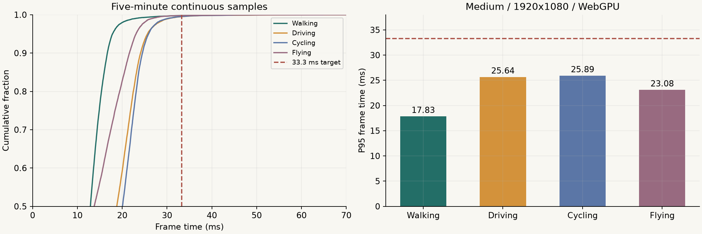
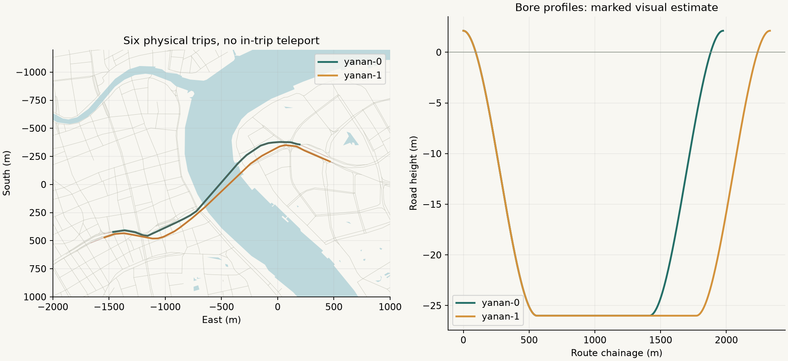
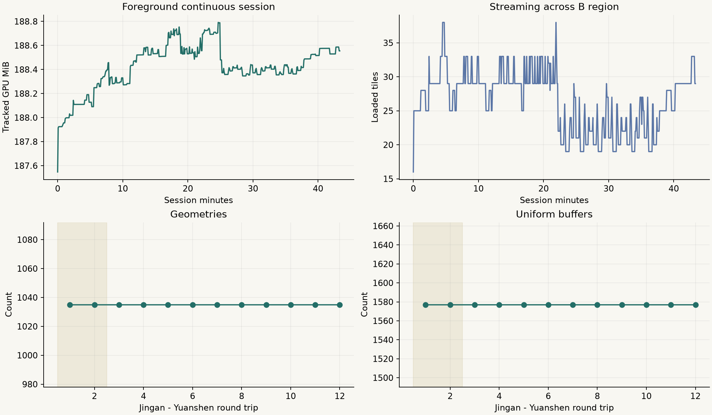

SHANGHAI CENTRAL · 0.2.0B档，中心城区68.66km²
12地标 · 7街区目的地 · 四模式 · 10米洞宽双向过江。新增静安寺、上海博物馆人民广场馆、上海展览中心、田子坊里弄。南浦大桥仅地面周边。
所列技术检查已通过；源道路属性缺失和视觉估算继续披露，最终人工画风确认待用户核对。完整报告 · 原始汇总 · 本地游玩
步行 · 301.00秒17.83 msP95 ≤33.3ms
汽车 · 301.02秒25.64 msP95 ≤33.3ms
自行车 · 301.02秒25.89 msP95 ≤33.3ms
直升机 · 301.02秒23.08 msP95 ≤33.3ms
清缓存冷启动中位数7.52秒；连续43.39分钟无应用错误；32控制点最大转换误差2.29米。

固定机位 · 33张原始截图
四模式实际操作
连续双向驾驶
浦西→浦东 · 白天 · 160.15秒 轨迹
浦西→浦东 · 夜间 · 159.93秒 轨迹
浦西→浦东 · 黄昏 · 171.96秒 轨迹
浦东→浦西 · 白天 · 135.83秒 轨迹
浦东→浦西 · 夜间 · 135.65秒 轨迹
浦东→浦西 · 黄昏 · 161.10秒 轨迹
轨迹与资源

